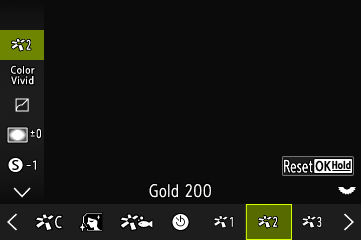
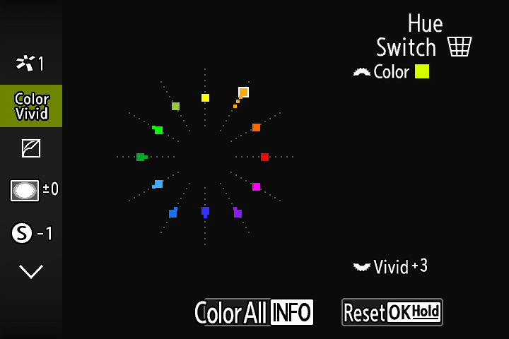
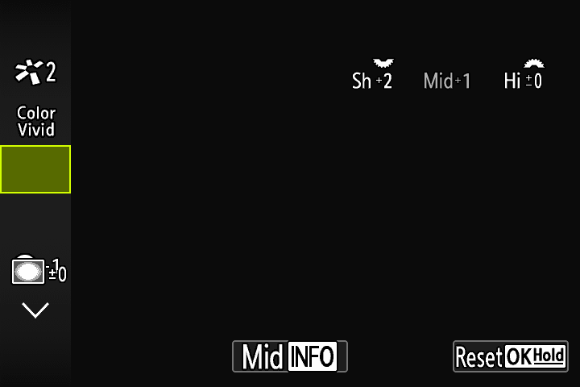

01 / Make a look
A small library. One file.
Choose from 67 film-inspired starting points in LookLab, or make your own. Save up to ten in LOOKS.BIN, in the card’s OM5MOD folder. The preview is an approximation using OM-3 colour measurements.

OM-5 Mark II · Experimental firmware
Three film slots. Twelve colours to shape. One file to carry your favourite looks.
Caduceus restores the hidden Color Profiles and adds Hue, Lightness, tone controls and Live ND64. Start by making a look in your browser.

01 / Make a look
Choose from 67 film-inspired starting points in LookLab, or make your own. Save up to ten in LOOKS.BIN, in the card’s OM5MOD folder. The preview is an approximation using OM-3 colour measurements.
02 / Choose a film
Half-press once after starting. Open Picture Mode and select Color Profile 1, 2 or 3. The trash button steps that slot through the films. Its values and name go into the slot’s settings.
Currently, move the highlight away and back to refresh the title. The film name appears in Picture Mode; the super control panel is still work in progress.

03 / Fine-tune the colour
Inside the colour wheel, the trash button cycles Saturation, Hue and Lightness. Adjust one colour or all twelve. Add a tone curve, contrast, sharpness, shading and a white-balance shift.
A chosen film is stored as settings: the design needs the card only to choose another. Persistence and JPEG output still need physical-camera verification.

04 / Shape the light
Control Shadows, Midtones and Highlights independently. Monochrome Profile 1–3 are also restored, and the Live ND menu extends to ND32 and ND64.
Real exposures, hardware behaviour and colour output remain unverified. Extra effects such as Glow and Halation are deferred.

The Mark II has much less free firmware space than the OM-3. This port focuses on films and colour controls.
| Feature | OM-3 | OM-5 Mark II |
|---|---|---|
| Film selection | 20 dedicated FILM entries | 3 Color Profile slots; up to 10 films per file |
| Film names | Title, quick menu, shooting screen | Picture Mode title, up to 12 characters |
| HSL, tone, WB shift | Yes | Implemented; emulator checks only |
| Extra film effects / recipe in EXIF | Yes | Not implemented |
| Successful camera test of this port | Separate upstream project | None recorded |
OM-5 Mark II (E148, firmware 1.1) comes first. The original OM-5 (E144) is a separate, more experimental second stage. Neither is a validated camera install.